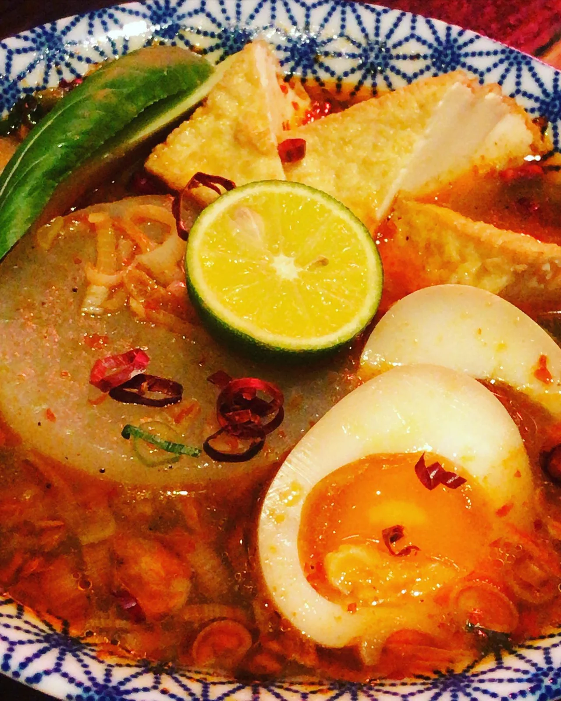

2020年1月14日
寒い時には、

寒い時には、 『麻辣おでん』 色々なお客様にご意見をいただきまして、完成させました！！ ピリ辛おでんでほっこり温まりましょ🍢 #上村さんありがとう #中華バル #中華 #中華料理 #福島グルメ #路地裏 #B級グルメ #中国 #チャイニーズ #路地裏チャイニーズ有馬 #おでん #麻辣おでん
2020年1月14日

寒い時には、 『麻辣おでん』 色々なお客様にご意見をいただきまして、完成させました！！ ピリ辛おでんでほっこり温まりましょ🍢 #上村さんありがとう #中華バル #中華 #中華料理 #福島グルメ #路地裏 #B級グルメ #中国 #チャイニーズ #路地裏チャイニーズ有馬 #おでん #麻辣おでん